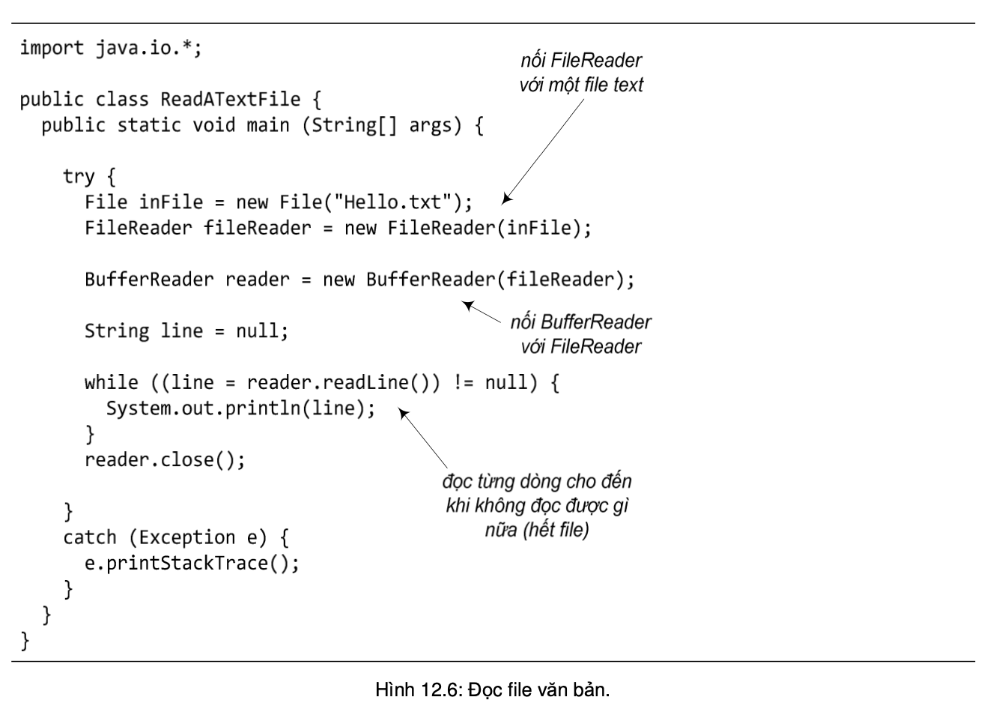
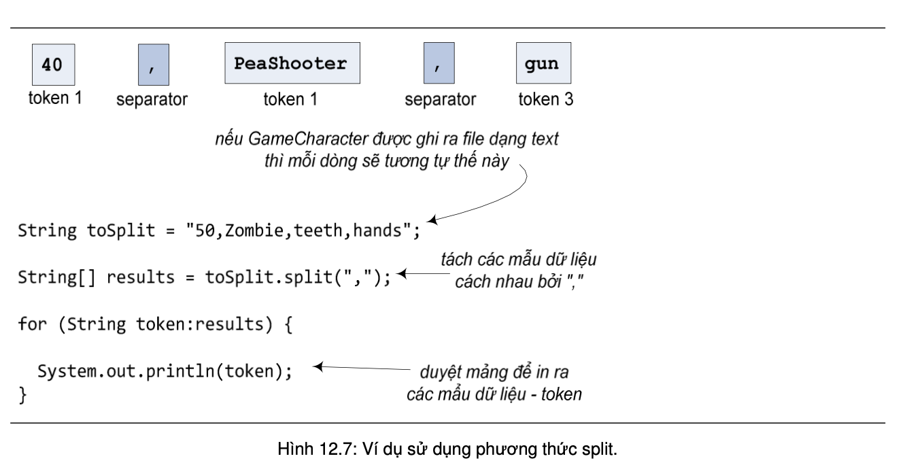

Đọc từ file văn bản là công việc có quy trình tương tự ghi file, chỉ khác là giờ ta dùng một đối tượng FileReader để trực tiếp thực hiện công việc đọc file và một đối tượng BufferReader nối với nó để tăng hiệu quả đọc.
Hình 12.6 là ví dụ đơn giản về việc đọc một file văn bản. Trong đó, một đối tượng FileReader – một dòng kết nối cho dạng kí tự – được nối với một file để đọc trực tiếp. Tiếp theo là một đối tượng BufferReader được nối với FileReader để tăng hiệu quả đọc. Vòng while lặp đi lặp lại việc đọc một dòng từ BufferReader cho đến khi dòng đọc được là rỗng (tham chiếu null), đó là khi không còn gì để đọc nữa - đã chạm đến cuối file.
Như vậy với cách đọc này, ta đọc được dữ liệu dưới dạng các dòng văn bản. Để tách các giá trị dữ liệu tại mỗi dòng, ta cần xử lý chuỗi theo định dạng mà dữ liệu gốc đã được ghi. Chẳng hạn, nếu dữ liệu là các chuỗi kí tự cách nhau bởi dấu phảy thì ta sẽ phải tìm vị trí của các dấu phảy để tách các giá trị dữ liệu ra. Phương thức split của lớp String cho phép ta làm điều này. Ví dụ sử dụng phương thức split được cho trong Hình 12.7. Có thể tra cứu chi tiết về phương thức này tại tài liệu Java API.
